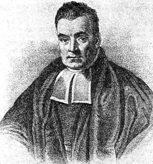
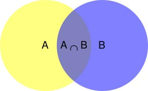
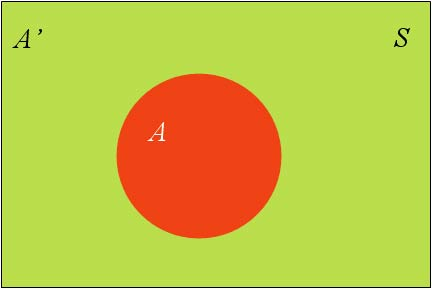
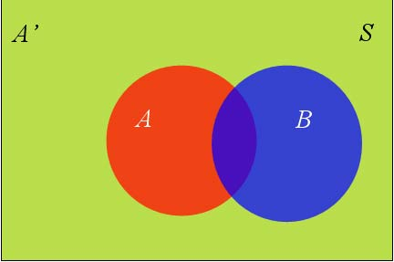
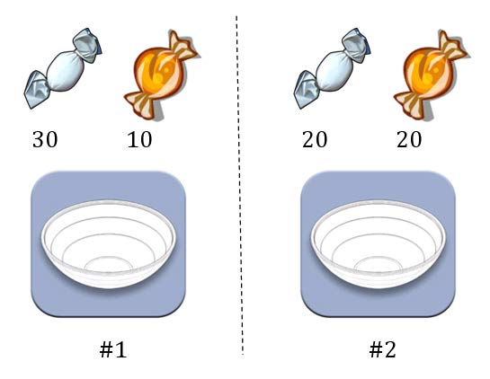

贝叶斯推断

什么是贝叶斯推断
贝叶斯推断（Bayesian inference）是一种统计学方法，用来估计统计量的某种性质。
它是贝叶斯定理（Bayes’ theorem）的应用。英国数学家托马斯·贝叶斯（Thomas Bayes）在1763年发表的一篇论文中，首先提出了这个定理。

贝叶斯推断与其他统计学推断方法截然不同。它建立在主观判断的基础上，也就是说，你可以不需要客观证据，先估计一个值，然后根据实际结果不断修正。正是因为它的主观性太强，曾经遭到许多统计学家的诟病。
贝叶斯推断需要大量的计算，因此历史上很长一段时间，无法得到广泛应用。只有计算机诞生以后，它才获得真正的重视。人们发现，许多统计量是无法事先进行客观判断的，而互联网时代出现的大型数据集，再加上高速运算能力，为验证这些统计量提供了方便，也为应用贝叶斯推断创造了条件，它的威力正在日益显现。
贝叶斯定理
要理解贝叶斯推断，必须先理解贝叶斯定理。后者实际上就是计算”条件概率”的公式。
所谓”条件概率”（Conditional probability），就是指在事件B发生的情况下，事件A发生的概率，用P(A|B)来表示。

根据文氏图，可以很清楚地看到在事件B发生的情况下，事件A发生的概率就是P(A∩B)除以P(B)。
$$
P(A|B)=\frac{P(A\cap B)}{P(B)}
$$
因此，
$$
P(A\cap B)=P(A|B)P(B)
$$
同理可得，
$$
P(A\cap B)=P(B|A)P(A)
$$
所以，
$$
P(A|B)P(B)=P(B|A)P(A)
$$
即
$$
p(A|B)=\frac{P(B|A)P(A)}{P(B)}\tag{1}
$$
这就是条件概率的计算公式。
全概率公式
由于后面要用到，所以除了条件概率以外，这里还要推导全概率公式。
假定样本空间S，是两个事件A与A’的和。

上图中，红色部分是事件A，绿色部分是事件A’，它们共同构成了样本空间S。
在这种情况下，事件B可以划分成两个部分。

即
$$
P(B)=P(B\cap A)+P(B\cap A’)
$$
在上一节的推导当中，我们已知
$$
P(B\cap A)=P(B|A)P(A)
$$
所以，
$$
P(B)=P(B|A)P(A)+P(B|A’)P(A’)
$$
这就是全概率公式。它的含义是，如果A和A’构成样本空间的一个划分，那么事件B的概率，就等于A和A’的概率分别乘以B对这两个事件的条件概率之和。
将这个公式代入上一节的条件概率公式()，就得到了条件概率的另一种写法：
$$
P(A|B)=\frac{P(B|A)P(A)}{P(B|A)P(A)+P(B|A’)P(A’)}
$$
贝叶斯推断的含义
对条件概率公式进行变形，可以得到如下形式：
$$
P(A|B)=P(A)\frac{P(B|A)}{P(B)}
$$
我们把P(A)称为”先验概率”（Prior probability），即在B事件发生之前，我们对A事件概率的一个判断。P(A|B)称为”后验概率”（Posterior probability），即在B事件发生之后，我们对A事件概率的重新评估。P(B|A)/P(B)称为”可能性函数”（Likelyhood），这是一个调整因子，使得预估概率更接近真实概率。
所以，条件概率可以理解成下面的式子：
后验概率 ＝ 先验概率 ｘ 调整因子
这就是贝叶斯推断的含义。我们先预估一个”先验概率”，然后加入实验结果，看这个实验到底是增强还是削弱了”先验概率”，由此得到更接近事实的”后验概率”。
在这里，如果”可能性函数”P(B|A)/P(B)>1，意味着”先验概率”被增强，事件A的发生的可能性变大；如果”可能性函数”=1，意味着B事件无助于判断事件A的可能性；如果”可能性函数”<1，意味着”先验概率”被削弱，事件A的可能性变小。
【例子】水果糖问题
为了加深对贝叶斯推断的理解，我们看两个例子。

第一个例子。两个一模一样的碗，一号碗有30颗水果糖和10颗巧克力糖，二号碗有水果糖和巧克力糖各20颗。现在随机选择一个碗，从中摸出一颗糖，发现是水果糖。请问这颗水果糖来自一号碗的概率有多大？
我们假定，H1表示一号碗，H2表示二号碗。由于这两个碗是一样的，所以P(H1)=P(H2)，也就是说，在取出水果糖之前，这两个碗被选中的概率相同。因此，P(H1)=0.5，我们把这个概率就叫做”先验概率”，即没有做实验之前，来自一号碗的概率是0.5。
再假定，E表示水果糖，所以问题就变成了在已知E的情况下，来自一号碗的概率有多大，即求P(H1|E)。我们把这个概率叫做”后验概率”，即在E事件发生之后，对P(H1)的修正。
根据条件概率公式，得到
$$
P(H_1|E)=P(H_1)\frac{P(E|H_1)}{P(E)}
$$
已知，P(H1)等于0.5，P(E|H1)为一号碗中取出水果糖的概率，等于0.75，那么求出P(E)就可以得到答案。根据全概率公式，
$$
P(E)=P(E|H_1)P(H_1)+P(E|H_2)P(H_2)
$$
所以，
$$
P(E)=0.75\times 0.5+0.5\times 0.5=0.625
$$
将数字代入原方程，得到
$$
P(H_1|E)=0.5\times \frac{0.75}{0.625}=0.6
$$
这表明，来自一号碗的概率是0.6。也就是说，取出水果糖之后，H1事件的可能性得到了增强。
【例子】假阳性问题
第二个例子是一个医学的常见问题，与现实生活关系紧密。
已知某种疾病的发病率是0.001，即1000人中会有1个人得病。现有一种试剂可以检验患者是否得病，它的准确率是0.99，即在患者确实得病的情况下，它有99%的可能呈现阳性。它的误报率是5%，即在患者没有得病的情况下，它有5%的可能呈现阳性。现有一个病人的检验结果为阳性，请问他确实得病的可能性有多大？
假定A事件表示得病，那么P(A)为0.001。这就是”先验概率”，即没有做试验之前，我们预计的发病率。再假定B事件表示阳性，那么要计算的就是P(A|B)。这就是”后验概率”，即做了试验以后，对发病率的估计。
根据条件概率公式，
$$
P(A|B)=P(A)\frac{P(B|A)}{P(B)}
$$
用全概率公式改写分母，
$$
P(A|B)=P(A)\frac{P(B|A)}{P(B|A)P(A)+P(B|\hat A)P(\hat A)}
$$
将数字代入，
$$
P(A|B)=0.001\times\frac{0.99}{0.99\times0.001+0.05\times 0.999}\approx 0.019
$$
我们得到了一个惊人的结果，P(A|B)约等于0.019。也就是说，即使检验呈现阳性，病人得病的概率，也只是从0.1%增加到了2%左右。这就是所谓的”假阳性”，即阳性结果完全不足以说明病人得病。
为什么会这样？为什么这种检验的准确率高达99%，但是可信度却不到2%？答案是与它的误报率太高有关。（【习题】如果误报率从5%降为1%，请问病人得病的概率会变成多少？）
有兴趣的朋友，还可以算一下”假阴性”问题，即检验结果为阴性，但是病人确实得病的概率有多大。然后问自己，”假阳性”和”假阴性”，哪一个才是医学检验的主要风险？